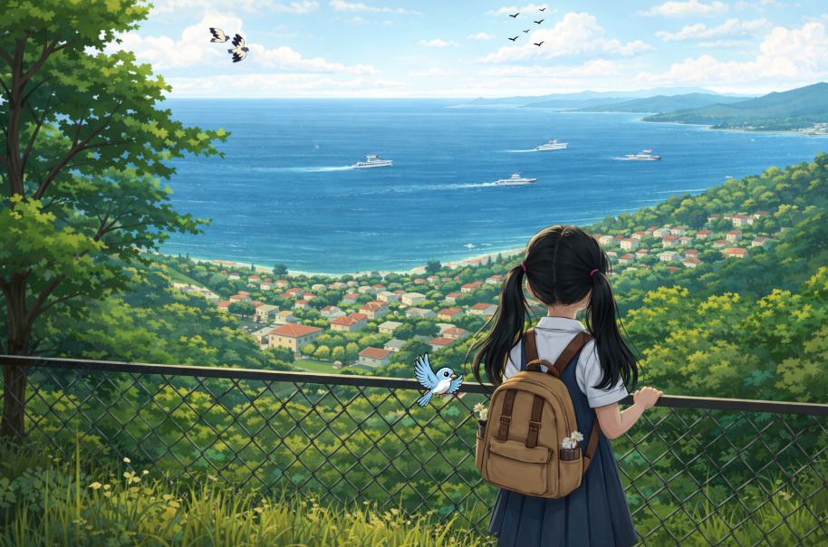

Somewhere between nature and the concrete cities, I am standing. Somewhere within a world, two distinct places, though. I am reading, listening, and observing what exists out there, but also inside of me. As everything has a place and a role here, I am also seeking mine. So, on the way, you can keep me some company… or I might keep to you. :)
Everything starts which a picture. A small girl, between classes and breaks in middle school. She found a spot in the garden of her school, where she could see the boats travelling from one side of the island’s coast to the mainland. It was a sunny day, and the girl was standing there, looking at the blue of the sea, thinking, Where are all those boats going? I want to go too. I want to go to the other side, to see what’s there. And she grew up, and she took the boats, and the buses, and the trains, but in the meantime… she forgot the way back.

It’s just a place to document things I work on, things I notice, and things I like. Field days. Ideas that don’t yet fit into papers. Thoughts that happen somewhere between observation and analysis.
If you’re here, welcome.